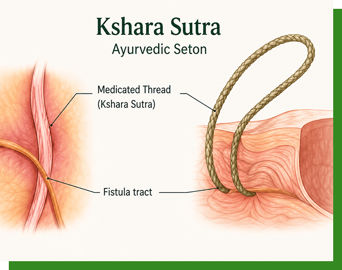
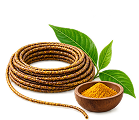
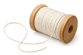
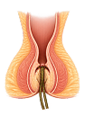
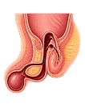
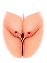
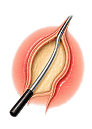

Consultation
Discuss your symptoms and medical history with our specialist.
Kshara Sutra Therapy is a specialised Ayurvedic para-surgical treatment commonly used for managing fistula and related anorectal conditions. It uses a medicated thread to support gradual healing while helping reduce recurrence with personalised clinical care.

Ksharasutra is a specialized Ayurvedic para-surgical technique in which a medicated thread is used in the management of selected anorectal conditions, especially anal fistula.
The treatment is planned after a detailed clinical evaluation of the condition, symptoms and individual requirements.
A traditional Ayurvedic approach that supports natural healing, promotes gradual recovery, and helps manage symptoms.
Based on traditional Ayurvedic principles and para-surgical practices.
Planned management with regular follow-up and clinical monitoring.
Treatment is selected according to the individual's condition and needs.
Continued guidance throughout the treatment and healing process.
May be considered for suitable anorectal conditions after clinical evaluation.
Treatment focuses on gradual management of the affected tract and monitoring of healing.
Each case is assessed to determine whether Ksharasutra is an appropriate option.
Patients receive advice on hygiene, bowel habits, diet and follow-up care as required.
The treatment plan may vary depending on the complexity and characteristics of the condition.
Regular reviews help the treating specialist assess progress and provide appropriate guidance.
The medicated thread is prepared using ingredients according to established Ayurvedic para-surgical protocols.
Ayurvedic herbal formulation applied to the thread.

Alkaline herbal preparation used in the Ayurvedic process.
Traditionally used as part of the preparation.
Turmeric is incorporated for supportive Ayurvedic properties.
Provides the structural base for controlled clinical use.

Selected anorectal conditions may be considered for Ksharasutra therapy following a detailed clinical evaluation.

Low and high fistula tracts may be treated with Ksharasutra therapy, based on clinical evaluation.

Selected recurrent or complex fistula cases may be managed with Ksharasutra therapy.

Selected pilonidal sinus cases may be treated with an appropriate minimally invasive approach.

Other sinus tracts may be considered for treatment after thorough clinical evaluation.
From consultation and diagnosis to personalised treatment and follow-up, every step is planned around your individual needs. We focus on accurate assessment, appropriate Ksharasutra therapy, comfortable care, and ongoing guidance to support recovery and long-term anorectal health.
Discuss your symptoms and medical history with our specialist.
A private and appropriate examination helps understand the condition.
The severity and type of piles are assessed before recommending treatment.
Treatment is planned according to your individual condition and requirements.
Regular guidance helps monitor recovery and maintain long-term anorectal health.
Make an appointment and get expert guidance for your condition.
We combine ancient Ayurvedic wisdom with modern technology to deliver safe,
effective, and lasting results.
20+ years of expertise in Ayurvedic healthcare.
USFDA-approved laser equipment for better outcomes.
Comfortable treatments with faster recovery.
Recover faster with effective fistula treatment.
Personalized care tailored to your needs.
Quality care with transparent pricing and no hidden costs.

Chief Ayurvedic Proctologist & Kshara Sutra Specialist

Flat No. 302, Abhinandana Jewel, Lanco Hills Road, Opp. HP Gas Godown, Shivapuri Colony, Mup-pas Panchavati Colony, Manikonda, Hyderabad, Telangana - 500089

Metro Pillar No. 817, People's Hospital Complex, 3rd Floor, Beside Narayana Junior College, KPHB, Kukatpally, Hyderabad, Telangana - 500072
Discover the heartwarming healing journeys of our patients at Dr. Saraja’s Ayurvedic Anorectal Hospital. Their experiences reflect our commitment to personalised Ayurvedic care, compassionate treatment, and lasting healing.
The treatment was simple, comfortable and the doctor explained every step clearly. I feel much better now.
NareshGoogle ReviewProfessional consultation and good follow-up. I would recommend the clinic to anyone looking for expert care.
RameshGoogle ReviewThe treatment was simple, comfortable and the doctor explained every step clearly. I feel much better now.
PrasadGoogle ReviewProfessional consultation and good follow-up. I would recommend the clinic to anyone looking for expert care.
GopiGoogle ReviewSpeak with our care team and schedule a private consultation at your preferred
Hyderabad centre.